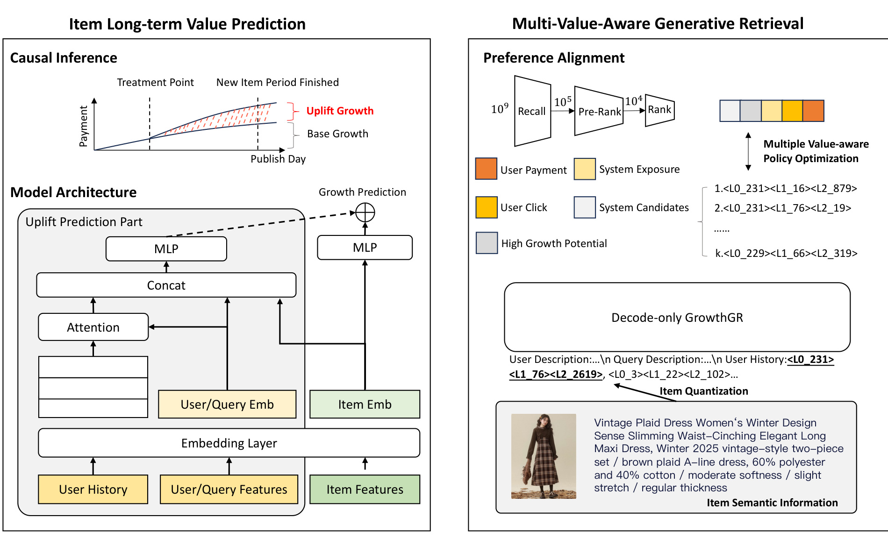
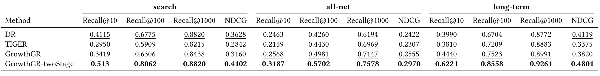
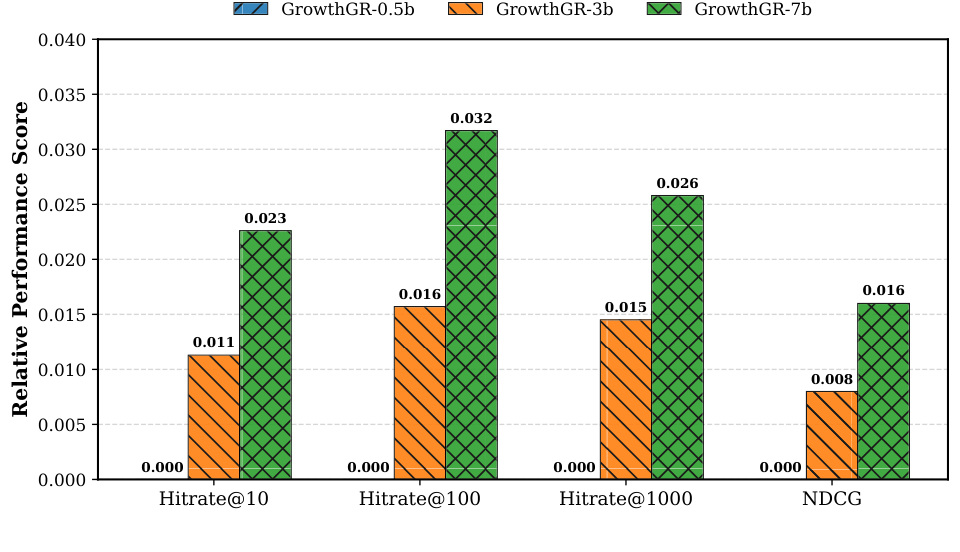
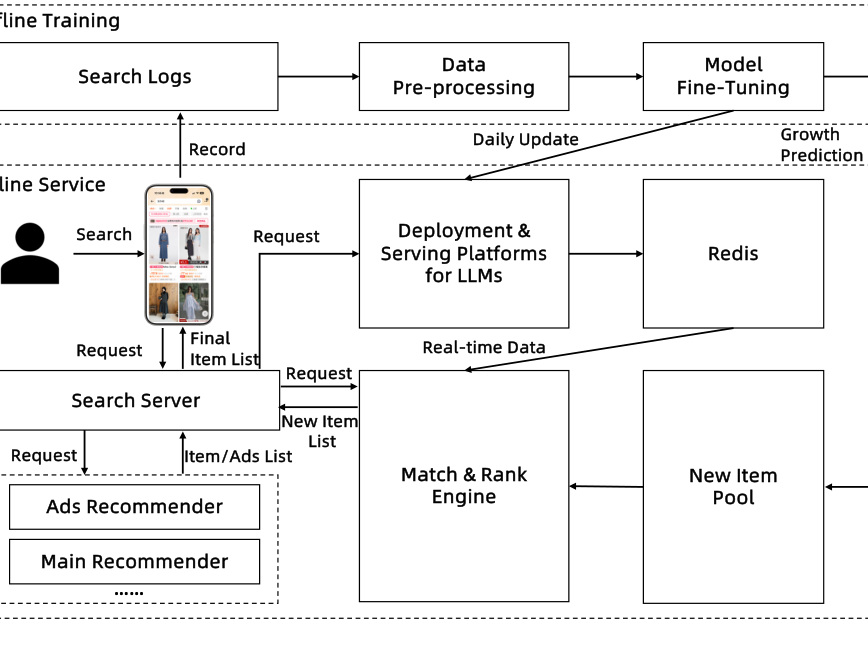

这里重新精读一篇最近公开的论文《Towards Sustainable Growth: A Multi-Value-Aware Retrieval Framework for E-Commerce Search》。中文可以叫《面向电商搜索可持续增长的多价值感知召回框架》。
论文链接：https://arxiv.org/abs/2605.17994 PDF：https://arxiv.org/pdf/2605.17994 代码/项目页：未公开 公开日期：2026-05-18，来源：arXiv cs.IR/cs.AI，arXiv ID：2605.17994。
0. 导读
GrowthGR 是淘宝搜索场景下的一篇工业论文，主题是新商品增长。它不是通常意义上的“冷启动推荐”小技巧，而是把新品长期增长价值放进搜索召回目标里。论文的核心判断是：大规模电商搜索系统天然会强化马太效应。热门商品因为历史点击、成交和协同信号更强，会持续获得更高曝光；新商品即使有潜力，也很难在冷启动窗口拿到能形成正反馈的精准流量。GrowthGR 试图回答：能不能在不牺牲总体搜索 GMV 的前提下，把一部分召回能力用于识别和扶持有长期增长潜力的新商品。
它的方案由两个核心模块组成。ItemLTV 用反事实思路估计单次用户交互对新商品未来交易增长的边际贡献。MultiGR 则基于 semantic ID 生成式召回，把搜索级联信号、短期成交价值和长期增长价值一起纳入训练，并通过 Multi-Value-Aware Policy Optimization 对齐多阶段线上价值。线上结果是新商品 GMV +5.3%，总体搜索 GMV +0.3%。这个结果比较关键，因为它说明新品增长不是单纯从头部商品那里硬切流量，而是在召回层找到了更高质量的新商品增长机会。
1. 背景与问题
电商搜索里的新品冷启动和普通推荐冷启动不完全一样。推荐场景可以通过探索位、冷启动流量池、达人分发等方式给新品曝光；搜索场景更强依赖 query 意图和即时成交。如果用户搜索“通勤羽绒服”，系统必须先保证搜索结果相关且可转化，再谈新品成长。因此新品增长目标必须嵌入搜索级联链路，而不能简单靠流量补贴。
传统召回和排序目标主要看短期反馈，例如点击、加购、成交、GMV。对老商品来说，这些信号足够丰富；对新商品来说，历史样本少，短期反馈不稳定，模型容易认为它“不确定”或“不值得召回”。这会形成负反馈：不给曝光就没有交互，没有交互就没有 embedding 和协同信号，没有信号就更难被召回。论文把这种问题称为新商品增长生态中的 Matthew effect。
但反过来，如果系统无差别给新品曝光，也会伤害用户体验和平台 GMV。真正需要的是识别“哪类用户的哪次交互，会对某个新品的未来增长产生增量价值”。比如一个泛泛用户随手点击高价新中式服饰，可能只留下噪声；一个对新中式有强兴趣且有影响力的核心种子用户购买，可能帮助商品进入更稳定的相似用户群，形成正反馈。GrowthGR 的 ItemLTV 就是为了估计这种 interaction-attributed uplift。
2. 核心方法
GrowthGR 包含 ItemLTV 和 MultiGR 两个主模块。ItemLTV 负责估计新商品长期价值，MultiGR 负责把这个价值接入搜索召回。
ItemLTV 把长期增长建模为反事实问题。论文将商品增长拆成 base growth 和 uplift growth。base growth 表示商品即使没有某次特定用户交互，也可能自然获得的增长；uplift growth 表示这次交互额外带来的未来交易增量。模型形式上用 treatment assignment W_i 区分是否受到某种交互处理，预测值可以理解为 G_base(X_i) + W_i * G_uplift(X_i)，然后用实际未来订单的 log(Y_i + 1) 做监督。这样设计的意义是避免把热门商品本来就有的自然增长误认为某次交互的贡献。
MultiGR 是 Multi-Value-Aware Generative Retrieval。它基于 semantic-ID generative retrieval，把商品表示成多层离散 semantic ID，让 decoder-only Transformer 根据用户描述、query 描述、用户历史和搜索级联信号生成候选 item IDs。与普通生成式召回不同，GrowthGR 不只优化单一 next item 或点击目标，而是使用 search、all-net、long-term 等多类 label。search label 代表搜索内即时价值，all-net label 代表跨场域行为，long-term label 代表更长期的商品增长结果。
MoPO 是多价值对齐的训练策略。论文说它将 item 在搜索漏斗中的级联价值，从 candidates、impressions、clicks 到 conversions，与 ItemLTV 给出的增长潜力结合起来，形成多目标 policy optimization。这里的难点是不同价值目标尺度不一、时间跨度不同、偏差不同。MoPO 的作用是让模型不要只追短期成交，也不要只追新品增长，而是在两者之间找到更符合平台生态的策略。论文还用 clipped importance weighting 控制离线策略学习中的分布偏差。
3. 图表解读

图 1 展示冷启动困境。左边普通用户可能给新品带来随机、低质量、熵很高的信号，这种信号会把商品推向宽泛女装簇，后续扩散不精准。右边核心种子用户的购买行为则是 sharp signal，能把新品推向更细的“新中式高端”语义簇，并通过精准 lookalike diffusion 形成正反馈。这个图说明 GrowthGR 关心的不是“给新品更多曝光”这么简单，而是找到能改变新品未来轨迹的高价值交互。

图 2 是整体框架。左侧 Item Long-term Value Prediction 通过 causal inference 和模型结构估计 base growth 与 uplift growth。右侧 Multi-Value-Aware Generative Retrieval 把用户、query、历史 item semantic IDs 和搜索级联信号输入 decoder-only GrowthGR，生成候选 item semantic IDs。图中 rank、pre-rank、recall 等漏斗信号也被放入 preference alignment，说明它是一个搜索系统内的多阶段价值对齐方案，而不是离线单点召回模型。

表 3 是淘宝真实数据上的离线结果，指标覆盖 search、all-net、long-term 三组 label，每组都有 Recall@10、Recall@100、Recall@1000 和 NDCG。对比方法包括 DR、TIGER 和 GrowthGR。这里最重要的是多目标平衡：有些方法可能在 search immediate label 上不错，但 long-term 或 all-net 不够好。GrowthGR 的目标是同时提高多阶段指标，尤其是让召回模型对长期增长信号更敏感。这个表支撑了论文关于“多价值感知”的主张。

图 3 是模型规模分析。GrowthGR 从 0.5B 到 3B 再到 7B，在 all-net label 上的 Hitrate@10、Hitrate@100、Hitrate@1000 和 NDCG 都呈现提升。这个图有两个含义：第一，生成式召回在这个工业任务上仍能吃到参数规模收益；第二，GrowthGR 的收益不是小模型偶然效果，扩大模型后多价值信号仍然能转化成指标提升。对工程而言，是否上 7B 要看延迟和成本，但 scaling trend 至少说明方法不是容量受限的小 trick。

图 4 是部署架构，左边是离线训练管线，包含 search logs、data preprocessing、ItemLTV training、MultiGR fine-tuning 和 daily update；右边是在线服务，搜索请求会触发 main recommender、ads recommender 和新品相关召回，最后进入 pool match and rank engine。这个图比算法框架更重要，因为新品增长问题必须闭环到日更、候选池选择、Redis 服务、搜索 server 和最终排序。GrowthGR 的工程复杂度主要也在这里：ItemLTV 分数、semantic ID 生成、候选池维护和线上多路召回必须稳定协作。
4. 实验与结果
数据规模非常大。表 1 中 Uplift 数据有 2.4B interactions、0.1B users、0.16B items、3M new items；Full-chain 数据有 5.0B interactions、0.17B users、0.11B items、2M new items；Online Daily 数据有 1.6B interactions、0.15B users、0.3B items、3M new items。这说明 GrowthGR 是直接面向淘宝生产级搜索日志设计的，而不是公开小数据集上的冷启动实验。
ItemLTV 的独立评估显示，加入 uplift part 后 MSE 从 1.348 降到 1.329，NDCG 从 0.842 升到 0.853。这个提升幅度不是特别夸张，但它证明反事实 uplift 分支能改善长期价值排序。更重要的是，ItemLTV 不是最终目标，而是给 MultiGR 提供长期增长潜力信号。
MultiGR 主结果表显示 GrowthGR 在 search、all-net 和 long-term 三类 label 上相对 DR、TIGER 有综合优势。消融表 4 进一步说明三个组件都重要。去掉 ItemLTV 后，long-term Recall@10 明显下降；去掉 CIW 后 all-net 和 long-term 指标都有损失；去掉 MoPO 后 all-net Recall@10、Recall@1000 以及 long-term 指标下降更明显。这说明长期价值估计、离线策略校正和多目标 policy optimization 都不是装饰。
线上 A/B 是最关键证据。论文在淘宝生产平台部署超过两个月，新商品 GMV 提升 5.3%，总体搜索 GMV 提升 0.3%。这个组合很重要，因为如果新品 GMV 上升但总体搜索 GMV 下降，说明只是流量搬家；现在两个指标同向，说明 GrowthGR 找到了部分“原系统没充分利用的新商品增长机会”。论文还提到 item-side A/B 跟踪新品生命周期，说明它不只看用户侧即时收益，也看商品侧长期演化。
5. 我的理解
我认为 GrowthGR 的核心价值是把供给侧生态目标前置到召回层。很多平台会在排序后段、流量策略层或运营策略层做新品扶持，但召回阶段如果没有把新品召进来，后续再怎么排序都没有机会。GrowthGR 用 generative retrieval 承接新品语义泛化能力，再用 ItemLTV 和 MoPO 把长期价值放进生成目标，这是比较完整的工业思路。
这篇论文和生成式推荐的关系也值得注意。很多 semantic ID 推荐论文关注的是“能否更准地生成下一个 item”，GrowthGR 关心的是“能否生成符合多阶段业务价值的 item”。这说明 generative retrieval 不只是技术上替代 ANN 或双塔召回，它可以把复杂业务目标写入生成策略。尤其在新品、广告、供给扶持这类任务中，生成式召回可能比传统向量召回更容易承载多目标约束。
可能被高估的地方是反事实 LTV 的准确性。论文把 ItemLTV 作为长期价值锚点，但真实线上因果非常复杂：流量位置、价格、库存、营销、商家能力、季节、竞争商品都会影响未来成交。ItemLTV 的 uplift 估计如果偏了，MoPO 会把偏差放大到召回策略里。因此这类系统必须配合强监控和持续 A/B，而不是只依赖离线 uplift model。
6. 工程启发与复现建议
如果要复现 GrowthGR，最小版本可以不从 7B decoder-only model 开始。先做一个新品长期价值模型：定义新品窗口，例如上架后 7 天或 14 天；定义未来增长标签，例如后续订单数、GMV 或曝光后的成交增量；用用户、query、item、早期交互特征训练 base/uplift 双头模型。关键是不要直接用未来 GMV 排序，否则会把自然热门商品和交互增量混在一起。
第二步做 semantic-ID 召回。可以先用 item 文本 embedding + RQ-VAE 得到三层 semantic IDs，再训练一个小 decoder 模型根据 query、用户历史和候选上下文生成 item SID。第三步加入多目标训练，把 search click/conversion、all-net behavior 和 long-term value 分别作为 reward 或 preference signal。MoPO 可先用简化版：不同目标加权，观察长期指标和短期指标的 trade-off，再逐步引入 policy optimization。
离线评测不能只看 Recall@K。至少要分 search immediate、cross-domain behavior、long-term growth、新品分桶、头部/腰部/尾部商家分桶。线上 A/B 要同时看新商品 GMV、整体 GMV、用户点击率、转化率、退款/差评、商家覆盖度和流量集中度。否则系统可能通过推高低价新品或促销商品获得短期 GMV，却伤害长期生态。
7. 局限与风险
-
反事实估计偏差。ItemLTV 试图估计单次交互对未来交易的增量，但真实线上干预不可完全观测，模型可能把商品自然增长误判成交互贡献。
-
业务目标冲突。新品增长、整体 GMV、用户体验、商家公平性之间天然冲突。MoPO 能缓解但不能消除冲突，仍需要业务阈值和人工策略。
-
工程复杂度高。ItemLTV、semantic ID tokenizer、decoder-only retrieval、MoPO、日更、Redis 服务、搜索多路召回都要稳定运行，任何模块漂移都会影响整体。
-
复现难度大。论文依赖淘宝十亿级日志和线上 A/B，外部研究者很难复现实验结论，只能复现简化版思想。
-
新品定义和生命周期敏感。不同品类新品成长周期不同，统一窗口可能对快消品、服饰、家电、奢侈品产生不同偏差。
-
可能放大运营或商家资源不均。高质量素材、强供应链、强营销的新商家可能更容易被 ItemLTV 识别，弱势商家仍可能被低估。
8. 后续跟进
-
关注作者是否公开 MoPO 训练细节、semantic ID 构造和解码策略。
-
对比淘宝 TBGRecall、OneRec、RecGPT、FORGE 等工业生成式召回工作，看 GrowthGR 在业务目标对齐上有什么延续关系。
-
跟进新品扶持中的因果推断论文，特别是 uplift modeling、off-policy evaluation 和长期价值估计。
-
如果在自己的系统中落地，优先做 ItemLTV 离线诊断和小流量 A/B，不要一开始就上完整生成式召回。